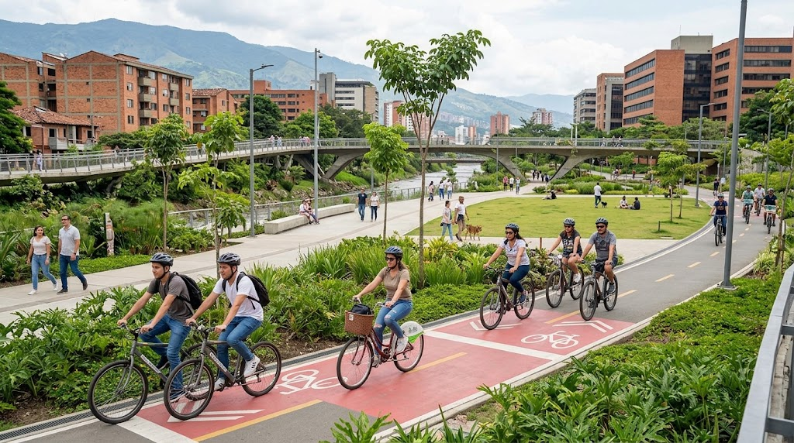

Ruta Urbana Cultural
Recorrido plano y seguro que aprovecha ciclorrutas segregadas y amplios bulevares arbolados. Conecta Parques del Río, la zona gastronómica y tranquila del primer parque de Laureles, y baja hacia Ciudad del Río bordeando el Museo de Arte Moderno (MAMM). Ideal para turistas y paseos recreativos con paradas de café.
Principiante / Fácil.
Explorar esta opción